Квадрупольный электромагнит постоянного и переменного тока (диаметр полюсных наконечников 15 мм, зазоры до 30 мм)
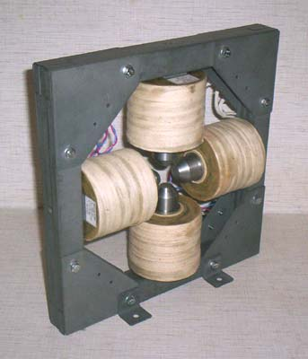
1. Назначение
Квадрупольный электромагнит [11] рассчитан и сконструирован для получения постоянных и переменных низкочастотных магнитных полей различной конфигурации. Он может работать как в дипольном, так и в квадрупольном режиме в зависимости от способа подключения катушек. Сферы применения: проведение различных физических экспериментов, в частности, испытания материалов в постоянных и переменных магнитных полях.
2. Конструкция
Эскиз квадрупольного электромагнита показан на рис. 2.1, а внешний вид - на рис. 2.2. Электромагнит состоит из ярма квадратной формы, набранного из отдельных пластин из малоуглеродистой стали, соединенных крепежными уголками. К плечам ярма крепятся цилиндрические стальные сердечники с коническими полюсными наконечниками. На них надеты катушки, представляющие из себя цилиндрические соленоиды, намотанные медным проводом. Конструкция устанавливается в вертикальном положении на опорные уголки. Выводы катушек подсоединены к клеммным колодкам, расположенным на крепежных уголках. С клеммных колодок выводы идут на коммутационную колодку, которая позволяет задавать различные режимы включения катушек.
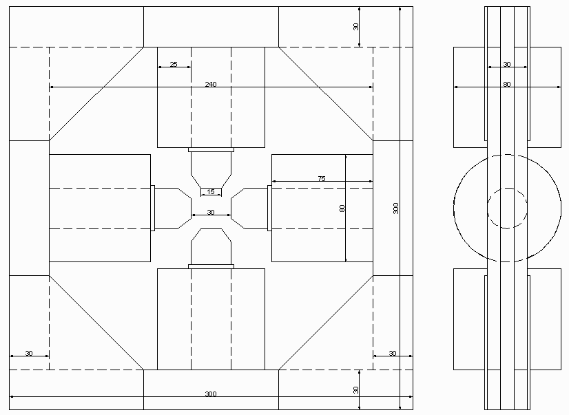
Рис. 2.1. Конструкция квадрупольного электромагнита (эскиз).
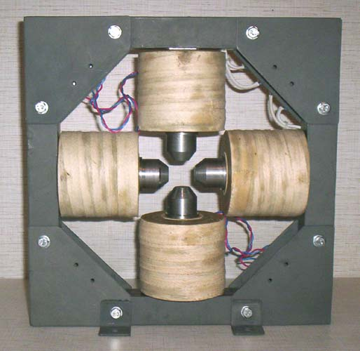 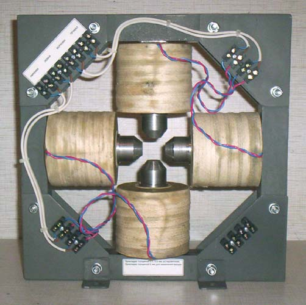
Рис. 2.2. Внешний вид квадрупольного электромагнита (с лицевой стороны и со стороны клеммных колодок).
3. Расчеты
Расчет катушек электромагнита (число витков, активное сопротивление и индуктивность) был выполнен с помощью программы Coil [2]. Результат расчета одной катушки приведен на рис. 3.1.
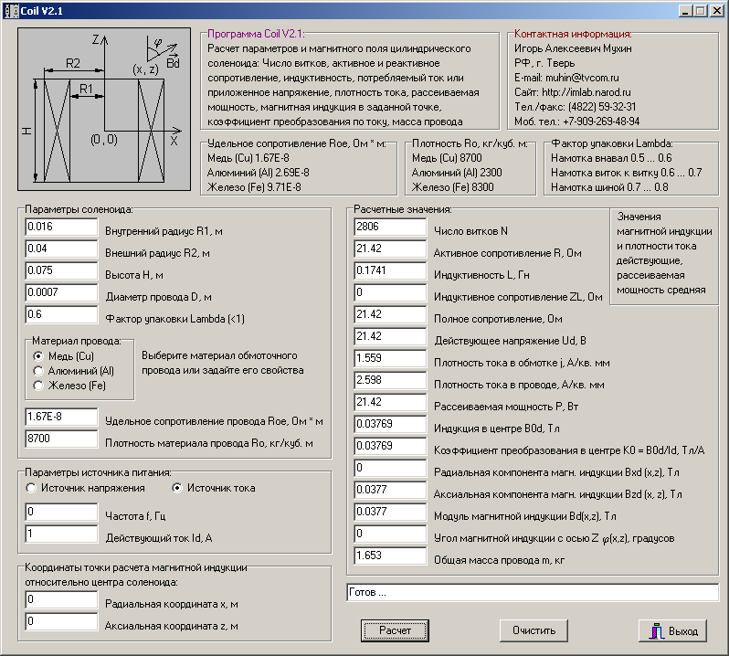
Рис. 3.1. Расчет катушки квадрупольного электромагнита (число витков, активное сопротивление и индуктивность) с помощью программы Coil [2] (число витков примерно 2800, активное сопротивление примерно 21.42 Ом, индуктивность примерно 0.1741 Гн).
Расчет магнитной системы электромагнита произведен методом конечных элементов [9] с помощью программы Ansoft Maxwell [1] на постоянном токе. На рис. 3.2 показана расчетная трехмерная модель магнитной системы электромагнита. Целью расчета было нахождение индуктивности обмоток и распределения магнитной индукции в рабочем зазоре при заданном токе питания каждой катушки при разных режимах включения. При расчете дипольного режима магнитодвижущая сила (МДС) каждой из противоположных катушек одной пары по 2800 А ∙ витков (2800 витков, ток 1 А), другая пара катушек отключена. При расчете квадрупольного режима МДС каждой катушки 2800 А ∙ витков.
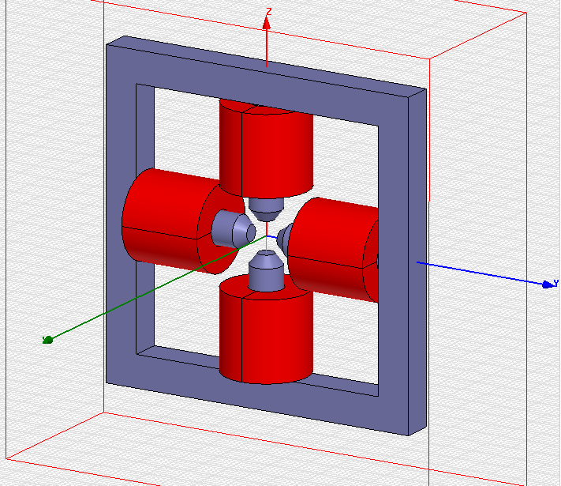
Рис. 3.2. Эскиз расчетной модели квадрупольного электромагнита: стальные детали показаны серым цветом, катушки - красным. Диаметр сердечников катушек 30 мм, диаметр полюсных наконечников 15 мм, рабочий зазор 30 мм.
Ярмо электромагнита и сердечники катушек сделаны из малоуглеродистой стали марки Ст3, аналогичной по магнитным свойствам марке 1010, кривая намагничивания которой показана на рис. 3.3.
Рис. 3.3. Кривая намагничивания стали (марка 1010, Ст3, Ст10).
Распределение магнитной индукции в рабочем зазоре рассчитывалось по двум линиям (см. рис. 3.4). На рис. 3.5 представлен график зависимости осевой составляющей магнитной индукции в рабочем зазоре 30 мм при дипольном включении пары противоположных катушек (две другие катушки не подключены). Магнитная индукция в центре рабочего зазора составляет 0.15 Тл при токе питания одной катушки 1 А.
Индуктивность каждой из катушек в квадрупольном режиме составляет примерно 2.4 Гн (2.4042, 2.4046, 2.4076, 2.4065). Матрица взаимных индуктивностей приведена в таблице 3.1. Индуктивность пары последовательно включенных катушек в дипольном режиме составляет 5.6604 Гн (две другие катушки не подключены). Индуктивность четырех последовательно включенных катушек в квадрупольном режиме составляет 13.259 Гн.
Таблица 5.1. Матрица взаимных индуктивностей катушек электромагнита (индуктивность в Гн).
|
Катушка |
Верхняя |
Нижняя |
Левая |
Правая |
|
Верхняя |
2.4042 |
-0.14048 |
0.52683 |
0.52607 |
|
Нижняя |
-0.14048 |
2.4046 |
0.52605 |
0.52637 |
|
Левая |
0.52683 |
0.52605 |
2.4076 |
-0.14061 |
|
Правая |
0.52607 |
0.52637 |
-0.14061 |
2.4065 |
Распределение магнитного поля в рабочем зазоре электромагнита в квадрупольном режиме работы показано на рис. 3.6.
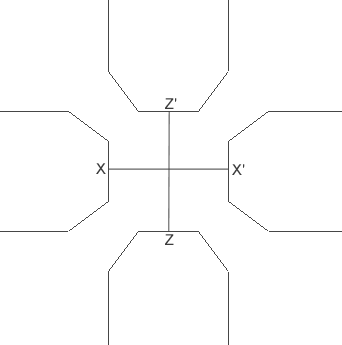
Рис. 3.4. Линии для расчета распределения магнитной индукции в межполюсном зазоре: X-X' – в центре зазора от левого сердечника к правому, Z-Z' – в центре зазора от нижнего сердечника к верхнему.
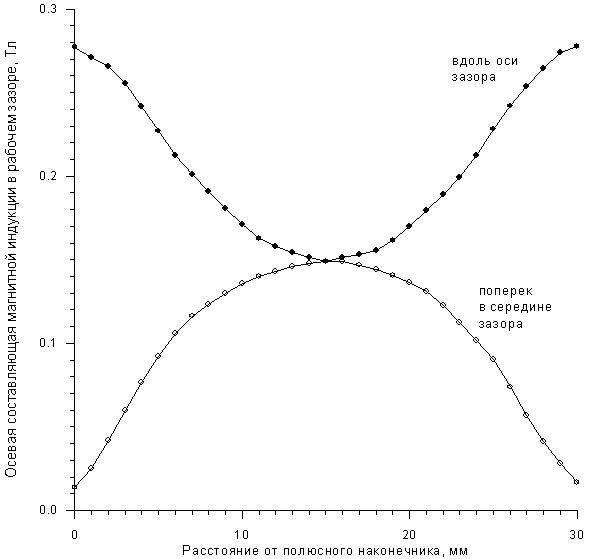
Рис. 3.5. Распределение магнитной индукции в рабочем зазоре электромагнита по линиям X-X' (поперек в середине зазора - нормальная составляющая вдоль линии) и Z-Z' (вдоль оси зазора - тангенциальная составляющая вдоль линии). Включение катушек дипольное.
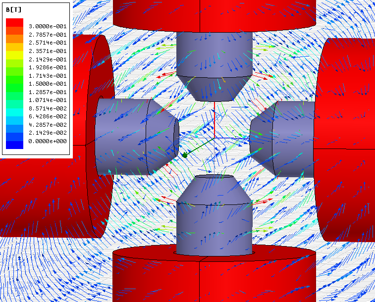
Рис. 3.6. Распределение магнитной индукции в квадрупольном электромагните (включение катушек квадрупольное).
4. Технические характеристики:
5. Испытания квадрупольного электромагнита
Активное сопротивление катушек электромагнита измерено мультиметром APPA-107N. Индуктивность катушек измерена на частоте 1000 Гц с помощью LC-метра VC6243. Параметры катушек сведены в таблицу 5.1. Измеренные значения хорошо согласуются с расчетными с учетом того, что катушки были намотаны проводом несколько большего диаметра, чем принято в расчетах (0.71 мм вместо 0.7 мм). Различие в параметрах катушек невелико (в пределах 1 % по сопротивлению и 2.5 % по индуктивности), таким образом, при работе электромагнита катушки вполне могут включаться различными способами, в зависимости от имеющейся задачи: последовательно, последовательно-параллельно, параллельно-последовательно, параллельно.
Таблица 5.1. Параметры катушек квадрупольного электромагнита.
|
Номер катушки |
Обмоточный провод |
Диаметр, мм |
Число витков |
Активное сопротивление, Ом |
Индуктивность, мГн |
Местоположение (вид со стороны клеммных колодок) |
|
1 |
ПЭТ-155 |
0.71 |
2800 |
21.89 |
188.1 |
Нижняя. |
|
2 |
ПЭТ-155 |
0.71 |
2800 |
21.86 |
186.5 |
Левая боковая. |
|
3 |
ПЭТ-155 |
0.71 |
2800 |
21.94 |
187.7 |
Верхняя. |
|
4 |
ПЭТ-155 |
0.71 |
2800 |
21.73 |
183.5 |
Правая боковая. |
Индуктивность катушек электромагнита в сборе по отдельности и в разных вариантах их включения была измерена на переменном токе методом амперметра-вольтметра (рис. 5.1) на частотах 50, 100, 200 и 300 Гц. В качестве источника переменного сигнала заданной частоты f использовался генератор Г3-118 с усилителем мощности [10]. Измеряемая индуктивность L подключалась к выходу усилителя мощности через амперметр PA1. Параллельно индуктивности подключался вольтметр PV1. В качестве амперметра и вольтметра использовались мультиметры MY65 в соответствующих режимах работы и на подходящих диапазонах тока или напряжения. Под сердечники катушек были подложены стальные прокладки толщиной по 2 мм, поэтому ширина зазоров между полюсными наконечниками составила 26 мм.
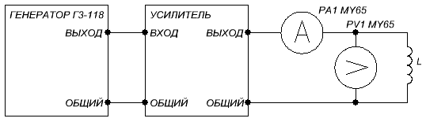
Рис. 5.1. Схема измерения индуктивности на переменном токе на разных частотах методом амперметра-вольтметра.
Ток I заданной частоты f через катушку, измеряемый амперметром PA1, может быть определен по формуле:

где U – напряжение на катушке, измеренное вольтметром PV1, L – индуктивность катушки, R – ее активное сопротивление. Тогда:


Таким образом, зная частоту измерительного сигнала f, активное сопротивление катушки R, ток через катушку I и напряжение на ней U, можно вычислить ее индуктивность L:

Результаты измерений для катушки номер 1 (нижняя) приведены в таблице 5.2 и на рис. 5.2.
Таблица 5.2. Индуктивность катушки N 1 на разных частотах (добавлены две рабочих частоты 68 и 297 Гц).
|
Частота f, Гц |
Напряжение U, В |
Ток I, мА |
Сопротивление R, Ом |
Индуктивность L, Гн |
Примечание |
|
50 |
10.436 |
20.85 |
21.89 |
1.592 |
|
|
68 |
10.069 |
15.96 |
21.89 |
1.476 |
|
|
100 |
10.413 |
12.78 |
21.89 |
1.296 |
|
|
200 |
10.413 |
8.08 |
21.89 |
1.025 |
|
|
297 |
10.289 |
6.203 |
21.89 |
0.889 |
|
|
300 |
10.381 |
6.20 |
21.89 |
0.888 |
|

Рис. 5.2. Зависимость индуктивности отдельной (нижней) катушки электромагнита от частоты.
С увеличением частоты индуктивность катушки уменьшается, а с уменьшением – растет, приближаясь к значению, рассчитанному на постоянном токе (примерно 2.4 Гн).
Результаты измерений для двух последовательно (дипольно) и последовательно-встречно (квадрупольно) включенных противоположных катушек (нижняя и верхняя) приведены в таблицах 5.3, 5.4 и на рис. 5.3, соответственно.
Таблица 5.3. Индуктивность последовательно (дипольно) включенных катушек N 1 и N 3 на разных частотах.
|
Частота f, Гц |
Напряжение U, В |
Ток I, мА |
Сопротивление R, Ом |
Индуктивность L, Гн |
Примечание |
|
50 |
10.122 |
9.96 |
43.83 |
3.232 |
|
|
100 |
10.245 |
6.12 |
43.83 |
2.663 |
|
|
200 |
10.238 |
3.79 |
43.83 |
2.149 |
|
|
300 |
10.227 |
2.86 |
43.83 |
1.897 |
|
Таблица 5.4. Индуктивность последовательно-встречно (квадрупольно) включенных катушек N 1 и N 3 на разных частотах.
|
Частота f, Гц |
Напряжение U, В |
Ток I, мА |
Сопротивление R, Ом |
Индуктивность L, Гн |
Примечание |
|
50 |
10.188 |
11.44 |
43.83 |
2.831 |
|
|
100 |
10.245 |
6.96 |
43.83 |
2.342 |
|
|
200 |
10.240 |
4.27 |
43.83 |
1.908 |
|
|
300 |
10.225 |
3.20 |
43.83 |
1.695 |
|
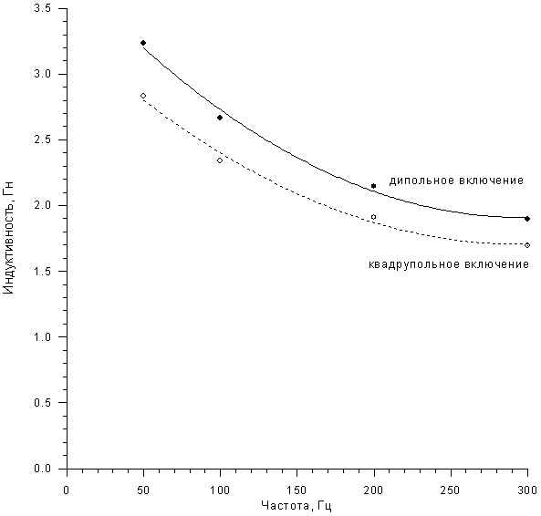
Рис. 5.3. Зависимость индуктивности двух последовательно включенных в разных режимах катушек (нижней и верхней) электромагнита от частоты.
Индуктивность двух катушек в дипольном включении несколько больше суммы их индуктивностей, а в квадрупольном – несколько меньше, но взаимная индуктивность, вообще говоря, невелика.
Магнитная индукция примерно в центре зазора (+1.5 мм) электромагнита на постоянном токе при дипольном включении катушек N 1 и N 3 (нижняя и верхняя) измерялась тесламетром с датчиком Холла ПХЭ606118В [3, 5]. Величина рабочего зазора составляла 26 мм. Результаты измерений приведены в таблице 5.5 и на рис. 5.4.
Таблица 5.5. Магнитная индукция в центре зазора при дипольном включении катушек N 1 и N 3 (нижняя и верхняя). Величина зазора 26 мм. Ток постоянный.
|
Ток, А |
Магнитная индукция в центре, мТл |
|
0 |
5.5 |
|
0.1 |
24.5 |
|
0.2 |
40.5 |
|
0.3 |
55.6 |
|
0.4 |
72.5 |
|
0.5 |
88.0 |
|
0.6 |
104.8 |
|
0.7 |
121.6 |
|
0.8 |
136.7 |
|
0.9 |
151.3 |
|
1.0 |
165.8 |
|
1.1 |
179.1 |
|
1.2 |
187.0 |
|
1.3 |
197.7 |
|
1.4 |
207.0 |
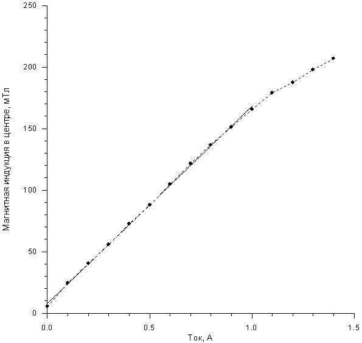
Рис. 5.4. Магнитная индукция в центре зазора (величина зазора 26 мм) электромагнита между катушками N 1 и N 3 (нижняя и верхняя) при дипольном включении в зависимости от тока катушек (ток постоянный). Сплошная линия - линейная аппроксимация в диапазоне тока 0 ... 1 А.
Зависимость магнитной индукции от величины тока близка к линейной примерно до тока 1 А (сплошная линия на рис. 5.4), далее начинается насыщение стальных деталей магнитной системы. Остаточная индукция при нулевом токе примерно 5.5 мТл. При токе питания 1 А магнитная индукция (165.8 мТл) вполне соответствует расчетной (149 мТл) с учетом уменьшенного на 4 мм зазора (26 мм вместо 30 мм).
Магнитная индукция вдоль оси зазора от нижнего полюсного наконечника к верхнему (по линии Z-Z’ рис. 3.4) электромагнита при дипольном включении катушек N 1 и N 3 (нижняя и верхняя) измерялась тесламетром с датчиком Холла ПХЭ606118В [3, 5]. Величина зазора составляла 26 мм. Ток питания катушек постоянный, величина 1 А. Результаты измерений приведены в таблице 5.6 и на рис. 5.5.
Таблица 5.6. Магнитная индукция вдоль оси зазора от нижнего полюсного наконечника к верхнему при дипольном включении катушек N 1 и N 3 (нижняя и верхняя). Величина зазора 26 мм. Ток питания катушек 1 А (постоянный).
|
Расстояние от нижнего полюсного наконечника, мм |
Магнитная индукция на оси, мТл |
|
0.5 |
295 |
|
1.5 |
283 |
|
2.3 |
274 |
|
4.0 |
242 |
|
5.1 |
230 |
|
8.0 |
195 |
|
10.5 |
168 |
|
11.5 |
165 |
|
12.3 |
164 |
|
13.7 |
163 |
|
14.5 |
166 |
|
15.5 |
169 |
|
18.0 |
193 |
|
20.9 |
229 |
|
22.0 |
242 |
|
23.7 |
275 |
|
24.5 |
284 |
|
25.5 |
295 |
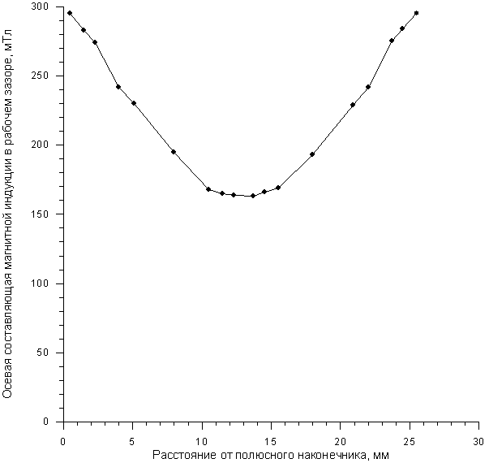
Рис. 5.5. Магнитная индукция вдоль оси зазора от нижнего полюсного наконечника к верхнему при дипольном включении катушек N 1 и N 3 (нижняя и верхняя). Величина зазора 26 мм. Ток питания катушек постоянный 1 А.
Результаты измерений параметров квадрупольного электромагнита полностью подтверждают расчетные данные.
6. Источники питания
Для возбуждения тока в обмотках электромагнита применимы различные источники питания [11], обеспечивающие на выходе как регулируемое, так и нерегулируемое постоянное [4] или переменное [7] напряжение. Питание переменным током частотой 50 Гц можно осуществлять либо непосредственно от сети переменного тока напряжением 220 В либо через регулируемый автотрансформатор (ЛАТР), либо через тринисторный регулятор мощности [7]. Если частоту питающего тока необходимо изменять, то подойдет частотный преобразователь или генератор сигналов с усилителем мощности [10]. Контролировать величину магнитной индукции в рабочем зазоре электромагнита можно напрямую с помощью тесламетра [3, 8] или на переменном токе с помощью измерительной катушки [6], а также косвенным методом по потребляемому току через калибровочную кривую (рис. 5.4).
Ссылки:
15.01.2023
Альтернативные источники
энергии
Компьютеры и
Интернет
Магнитные поля
Механотронные системы
Перспективные
разработки
Электроника и
технология